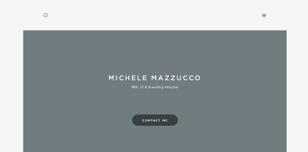

Favorite Website: Week 3
Michele Mazzucco
For the third week's favorite website I chose designer Michele Mazzucco's website. Her website is primarily used as a portfolio and contact page to get in touch with her for design work. Initially I wasn't too drawn to her website because I felt that its color scheme and lack of header image made it too plain to be worth scrolling down, but upon a second inspection I found that I actually enjoyed a few of the elements on the site.
As I did with my previously chosen sites, I like the use of the 100% height content dividers, navigable by the anchored links across the top menu bar. I like the way she laid out her about me section and her contact sheet in the double column layout. Especially in the about me section, with the left side being occupied by a large image that fits in well with the flat color scheme and doesn't command too much attention.